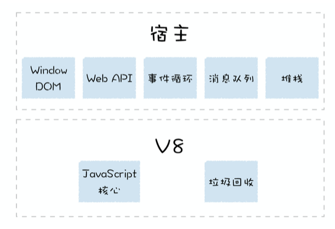
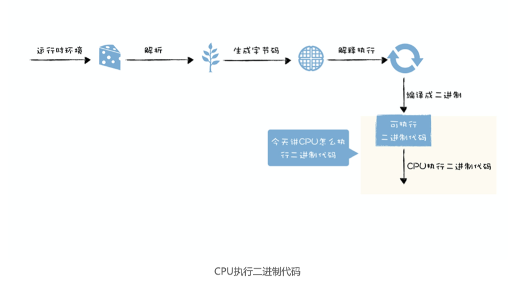
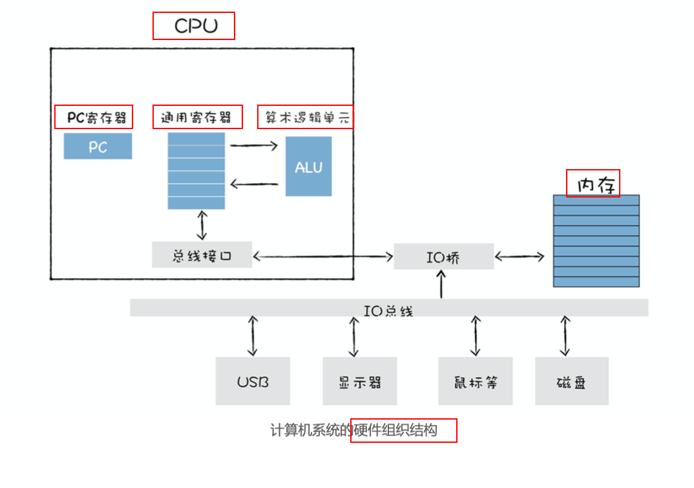
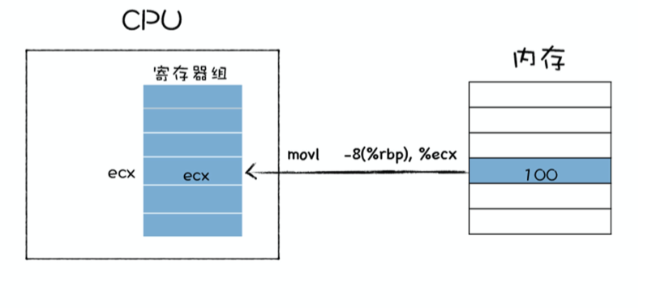
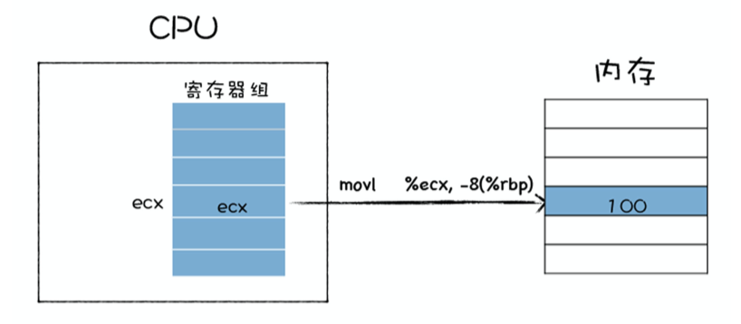
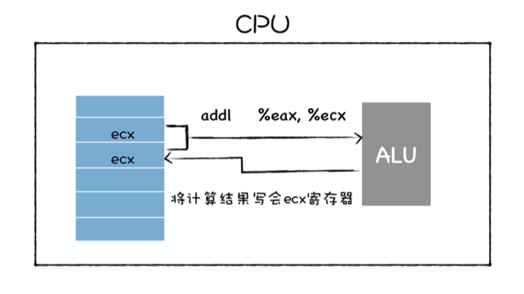
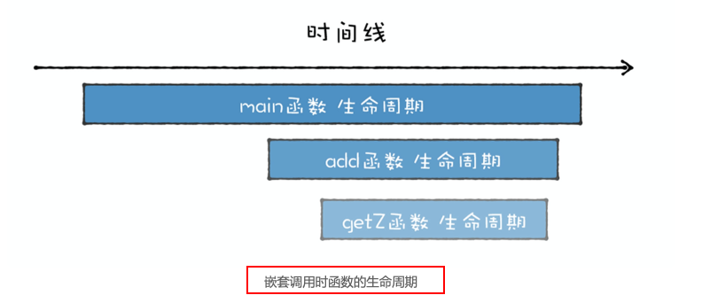
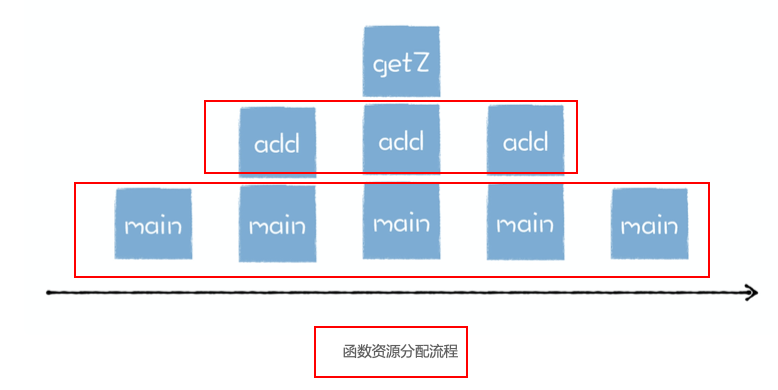
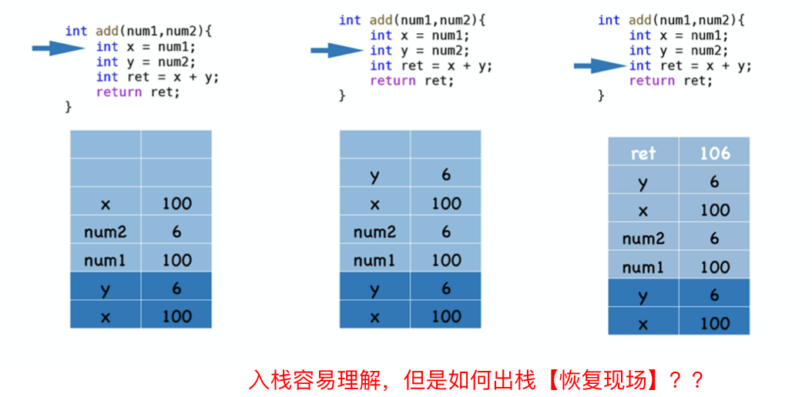
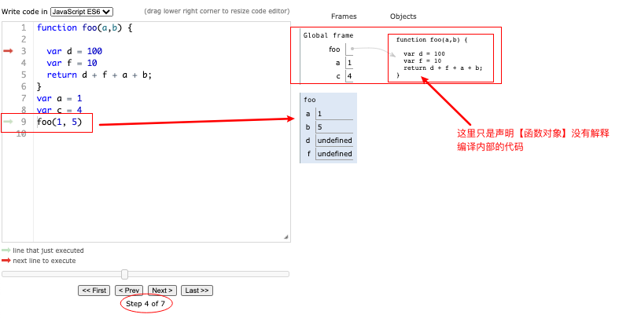

To be or not to be, that is the question.
运行时环境
什么是运行是运行时环境？
代码执行时所需的堆空间和栈空间、全局执行上下文、全局作用域、内置的内建函数、*宿主环境*提供的扩展函数和对象，还有消息循环系统; 有了这些环境V8才可以执行JS代码。执行代码时，又包含了解析源码、生成字节码、解释执行或者编译执行这一系列操作
宿主环境 vs V8
V8和浏览器 类比与 病毒🦠与细胞的，这个类比必须满分💯！
宿主是指为病毒等寄生物提供生存环境的生物，宿主有的自己的完整的代谢系统，而病毒则没有自己的代谢系统，也没有自己的酶系统，它只是由核酸长链和蛋白质外壳构成。
当病毒离开了宿主细胞，就成了没有任何生命活动，也不能独立自我繁殖的化学物质。同时，如果病毒利用了太 多的宿主细胞资源，也会影响到细胞的正常活动。
Nodejs、浏览器都是V8的宿主
V8 只提供了 ECMAScript 定义的一些对象和一些核心的函数，这包括了 Object、Function、String。除此之外，V8 还提供了垃圾回收器、协程等基础内容，不过这些功能依然需要宿主环境的配合才能完整执行。
堆栈
宿主在启动 V8 的过程中，会同时创建堆空间和栈空间,再继续往下执行，产生的新数据都 会存放在这两个空间中。
栈空间主要是用来管理 JavaScript 函数调用的，栈是内存中连续的一块空间，同时栈结构是“先进后出”的策略;
堆空间是一种树形的存储结构，用来存储对象类型的离散的数据;
全局执行上下文和全局作用域
V8 用执行上下文来维护执行当前代码所需要的变量声明、this 指向等。执行上下文中主要包含了三部分，变量环境、词法环境、和 this 关键字; 全局作用域和全局执行上下文的关系，其实你可以把作用域看成是一个抽象的概念，比如在 ES6 中，同一个全局执行上下文中，都能存在多个作用域;

构造事件循环系统
有了堆空间和栈空间，生成了全局执行上下文和全局作用域，接下来就可以执行 JavaScript 代码了吗？
答案是不行，因为 V8 还需要有一个主线程，用来执行 JavaScript 和执行垃圾回收等工作。V8 是寄生在宿主环境中的，它并没有自己的主线程，而是使用宿主所提供的主线程， V8所执行的代码都是在宿主的主线程上执行的。
只有一个线程还不够，执行完就退出了，所以还需要一个事件循环机制。
但是
多任务的需求就需要引入消息队列机制，排队执行。
机器代码
急需一本《计算机编译原理》
有了运行时环境，V8就可以执行JS代码。V8 首先需要将 JavaScript编译成字节码或者二进制代码，然后再执行。
机器码
int main() { |
CPU执行程序
分析程序到底是怎么被执行。
- 首先，在程序执行之前，我们的程序需要被装进内存。
快递柜、快递柜中的每个单元格的编号、操作快递柜的人， 你可以把它们对比成点算机中的内存、内存地址和CPU。
- CPU 便可以从内存中
取出一条指令，然后分析该指令，最后执行该指令。取出指令、分析指令、执行指令这三个过程称为一个CPU 时钟周期;
- 指令保存位置：PC寄存器，
- 通用寄存器比喻成是你身上的口袋，内存就是你的背包，而
硬盘则是你的行李箱; 通用寄存器通常用来存放数据或者内存中某块数据的地址，我们把这个地址又称为指针，通 常情况下寄存器对存放的数据是没有特别的限制的，比如某个通用寄存器既可以存储数据， 也可以存储指针。- 通用寄存器容量小，读写速度快，内存容量 大，读写速度慢。
- 通用寄存器比喻成是你身上的口袋，内存就是你的背包，而
指令类型
第一种是加载的指令，其作用是从内存中复制指定长度的内容到通用寄存器中，并覆盖寄存器中原来的内容。你可以参看下图：
比如上图使用了 movl 指令，指令后面跟着的第一个参数是要拷贝数据的内存的位置，第二个参数是要拷贝到 ecx 这个寄存器。
第二种存储的指令，和加载类型的指令相反，其作用是将寄存器中的内容复制内存某个位 置，并覆盖掉内存中的这个位置上原来的内容。你可以参看下图：

上图也是使用 movl 指令，movl 指令后面的 %ecx 就是寄存器地址，-8(%rbp) 是内存中 的地址，这条指令的作用是将寄存器中的值拷贝到内存中。
第三种是更新指令，其作用是复制两个寄存器中的内容到 ALU 中，也可以是一块寄存器和 一块内存中的内容到 ALU 中，ALU 将两个字相加，并将结果存放在其中的一个寄存器中， 并覆盖该寄存器中的内容。具体流程如下图所示：

观察上图，上图是通过 jmp 来实现的，jmp 后面跟着要跳转的内存中的指令地址。
除了以上指令之外，还有 IO 读 / 写指令，这些指令可以从一个 IO 设备中复制指定长度的 数据到寄存器中，也可以将一个寄存器中的数据复制到指定的 IO 设备。
以上就是一些基础的指令类型，这些指令像积木，利用它们可以搭建我们现在复杂的软件大厦。
堆栈：函数调用是如何影响到内存布局的？
为何会有：栈溢出的错误？
JS执行时的内存布局是怎么样的？
function foo() { |
为何用栈管理函数调用？
int getZ() { |
函数调用者的生命周期总是长于被调用者（后进），并且被调用者的生命周期总是先于调用者的生命周期结束 (先出)。
函数资源分配和回收角度来看，被调用函数的资源分配总是晚于调用函数 (后进)，而函数资源的 释放则总是先于调用函数 (先出);
 正好 栈的特性–后进先出【LIFO】满足函数的特性。
满足特性，但如何管理函数调用呢？
栈管理函数调用
控制权从main函数转移到add函数；那么如何归还控制权，回到main函数执行的现场呢？
寄存器中保存一个永远指向当前栈顶的指针, 通常存放在 esp 寄存器中, 作用: 告诉你应该往哪个位置添加新元素.
ebp 寄存器，用来保存当前函数的起始位置;，我们把一个函数的起始位置也称为栈帧指针，ebp 寄存器中保存的就是当前函数的栈帧指针;
每个函数都有自己的栈帧指针
栈帧: 每个栈帧对应着一个未运行完的函数，栈帧中保存了该函数的返回地址和局部变量。
- 入栈：esp记录栈顶指针，移动esp指针；
- 出栈：esp向下移动，&& 从ebp中找到函数的起始指针。
// 自己调用自己，导致栈无限增长，超出限制！ |
堆
栈的最大的优点结构性质[快]导致了最大的缺点：获取连续空间很难。
堆不要求存连续内存，堆内存没有固定模式，可以随意分配和释放。
struct Point { |
延迟解析 && 闭包
V8执行JS代码分为两步
- 编译：V8将js代码转为字节码||二进制机器码
- 执行: 解释器解释执行字节码。
V8不一次性将js解析为中间代码。采用 惰性解析。
过多的代码会增加编译时间；
机器码会放在内存中。
惰性解析： 遇到函数声明，将之转换为函数对象，但不解析和编译函数内部的代码，也不会为函数的内部代码生成抽象的语法树。
闭包
闭包的大三特性
- JavaScript 语言允许在
函数内部定义新的函数 - 内部函数中访问父函数中定义的变量
- 因为函数是一等公民，所以函数可以作为返回值
闭包给惰性解析解析带来的问题—-因为惰性解析时遇到函数只会转为对象，并不知道内部引用函数是否引用外部变量。
function foo() { |
当调用 foo 函数时，foo 函数会将它的
内部函数 inner返回给全局变量 f；然后
foo 函数执行结束，执行上下文被V8 销毁了；虽然 foo 函数的执行上下文被销毁了，但是依然存活的 inner 函数引用了 foo 函数作用 域中的变量 d。
当 foo 执行结束时，变量 d 该不该被销毁？
如果不应该被销毁，那么应该采用什么策略？
如果采用了惰性解析，那么当执行到 foo 函数时，V8 只会解析 foo 函数，并不会解析内部的 inner 函数，那么这时候 ``V8 就不知道` inner 函数中是否引用了 foo 函数的变量 d。
如何判断inner函数是否引用外部函数变量？
负责这个模块的就是—-预解析器
预解析器解决闭包问题
惰性解析遇到函数声明，并不解析函数内部，导致闭包引用不释放问题。V8引入预解析器会对函数做一次快速的预解析，目的有两个：
- 判断当前函数是否存在语法的错误；
- 检查函数内部是否引用了
外部变量，如果引用了外部的变量，预解析器会将栈中的变量复制到堆中，在下次执行到 该函数的时候，直接使用堆中的引用，这样就解决了闭包所带来的问题。
a 分别保存在栈还是堆？
// 没有外部引用，当执行到var a； 会分配在【栈】上 |
function foo() { |
字节码 机器码
早期的 V8 为了提升代码的执行速度，直接将 JavaScript 源代码编译成了没有优化的二进制的机器代码; 存在两个问题：
- 时间问题：编译时间过久，影响代码启动速度；
- 空间问题：缓存编译后的二进制代码占用更多的内存。
后期引入 字节码，有三个优势
- 解决启动问题：生成字节码的时间很短
- 解决空间问题：字节码占用内存不多，缓存字节码会大大降低内存的使用；
- 代码架构清晰：采用字节码，可以简化程序的复杂度，使得 V8 移植到不同的 CPU 架构 平台更加容易。
字节码 VS 机器码
字节码是由V8虚拟机解释执行，是模拟物理CPU的执行过程
机器码是直接在物理CPU上执行，速度更快。
V8 在执行一段 JS 代码之前，需要将其编译为字节码，然后再解释执行字节码或者将字节码编译为二进制代码然后再执行。
如何生成字节码
V8 执行一段 JavaScript 代码时；
- 先对 JavaScript 代码进行解析 (Parser)， 并生成为 AST 和作用域信息
- AST 和作用域信息被输入到一个称为 Ignition 的解释器中
- 将其转化为字节码，
- 字节码再由 Ignition 解释器来解释执行。
Ignition解释器生成&执行字节码.
function add(x, y) { |
- 参数的声明 (PARAMS):参数声明中包括了所有的参数，在这里主要是参数 x 和参数 y，你可以在函数体中使用 arguments 来使用对应的参数
- 变量声明节点 (DECLS):参数部分你可以使用 arguments 来调用
- 是 x+y 的表达式节点
- RETURN 节点，它指向了 z 的值，在这里是 local[0]。
解释器的分类
解释器就是模拟物理机器来执行字节码的，通常有两种类型的解释器，基于栈 (Stack-based)和基于寄存器 (Register-based)，
- 基于栈的解释器使用栈来保存函数参数、中间运算结果、变量等，如：Java、.net、早起的V8
- 基于寄存器的虚拟机则支持寄存器的指令操作，使用寄存器来保存参数、中间计算结果。现在的V8
分析字节码
StackCheck |
隐藏类
静态语言 VS 动态语言 的效率
静态语言比动态语言的执行效率更高.
- 静态语言，可以直接通过
偏移量来查询对象的属性值; 因为静态语言需要定义好对象的结构【形状】，先编译后执行，编译的时候，每个对象的形状是固定的； - 动态语言，运行时对象的属性可以被修改，先查找再更改，涉及【快慢属性的问题】；
- 对比查找速度，静态语言的执行效率高于动态语言。
隐藏类
为了提升代码的执行效率，V8将JS的对象静态化,即：运行JS时默认对象是静态的，包括
- 对象创建好后，不会添加新的属性；
- 对象创建好后，不会删除属性；
然后为每个对象，创建隐藏类记录对象的布局信息，如：包含的属性、偏移量。像不像静态语言中形状。
V8 中，把隐藏类又称为 map，每个对象都有一个 map 属性，其值指向内存中的隐藏类。
let point = {x:100,y:200} |
多对象公用隐藏类
每个对象都有一个隐藏类，那么对象相同是否可以公用？可以
那么什么才算是对象相同？
- 相同的属性名称
- 相同的属性个数
- 顺序也需要相同
let point = {x:100,y:200}; |
因此，属性的增删，会重新建隐藏类。
最佳实践
- 使用字面量初始化对象时，要保证属性的顺序是一致的
- 尽量使用字面量一次性初始化完整对象属性
- 尽量避免使用 delete 方法
function loadX(o) { |
当 V8 调用 loadX 的时候，会先查找参数 o 的隐藏类，然后利用隐藏类中的 x 属性的偏移量查找到 x 的属性值，虽然利用隐藏类能够快速提升对象属性的查找速度，但是依然有一 个查找隐藏类和查找隐藏类中的偏移量两个操作，如果 loadX 在代码中会被重复执行，依然影响到了属性的查找效率。
内联缓存
通常 V8 获取 o.x 的流程是这样的：查找对象 o 的隐藏类，再通过隐藏类查找 x 属性偏移 量，然后根据偏移量获取属性值，
内联缓存 (Inline Cache)，简称为 IC， 是为了优化查找效率。
V8 引入了 IC，IC 会监听每个函数的执行过程，并在一些关键的地方埋下监听点， 这些包括了加载对象属性 (Load)、给对象属性赋值 (Store)、还有函数调用 (Call)，V8 会 将监听到的数据写入一个称为反馈向量 (FeedBack Vector) 的结构中，同时 V8 会为每个执行的函数维护一个反馈向量。有了反馈向量缓存的临时数据，V8 就可以缩短对象属性的查找路径，从而提升执行效率。
如果一个插槽中只包含 1 个隐藏类，那么我们称这种状态为单态 (monomorphic)；
如果一个插槽中包含了 2～4 个隐藏类，那我们称这种状态为多态 (polymorphic)；
如果一个插槽中超过 4 个隐藏类，那我们称这种状态为超态 (magamorphic)。